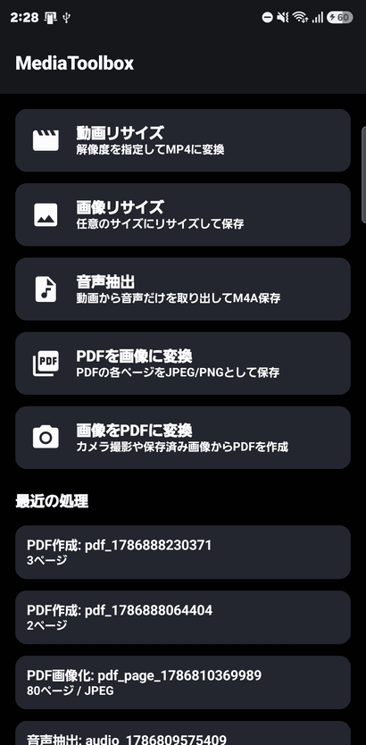
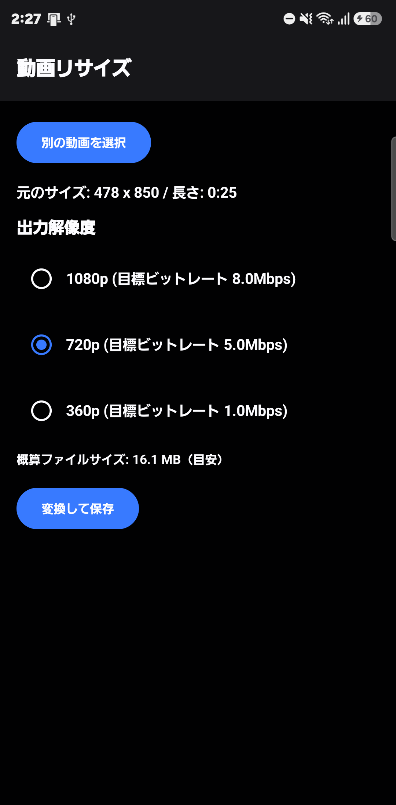
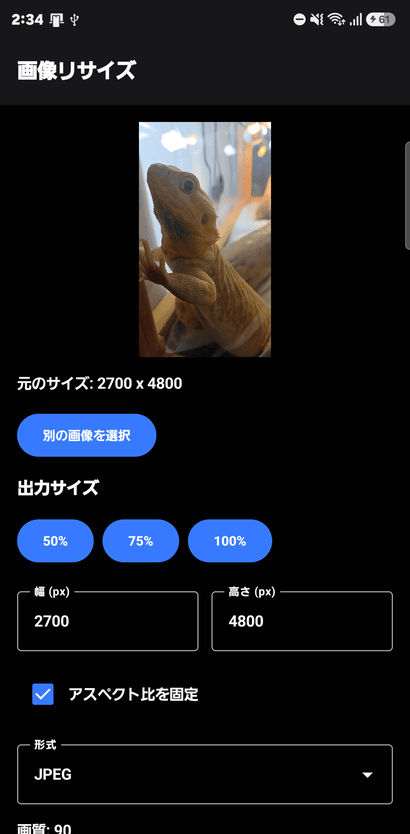

MediaToolbox
動画・画像・音声・PDFをまとめて変換できる、シンプルなマルチメディア変換ツール。
無料
🌐 日本語 / English 対応
- 【動画リサイズ】1080p/720p/360pなど好きな解像度を指定してMP4形式に変換・保存
- 【画像リサイズ】幅・高さを自由に指定してリサイズ（アスペクト比固定にも対応）
- 【音声抽出】動画から音声だけを取り出してM4A形式で保存
- 【PDFを画像に変換】PDFの各ページをJPEG/PNGとして書き出し
- 【画像をPDFに変換】カメラ撮影や保存済みの画像からPDFを作成



※ 現在テスト公開準備中のため、公開までリンク先が表示されない場合があります。